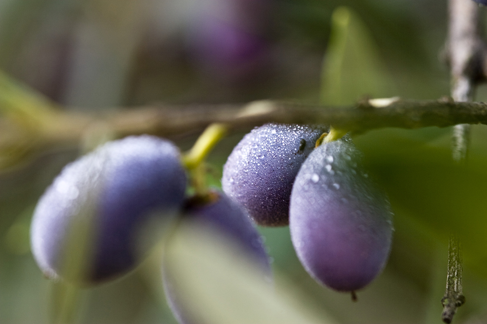

Um dos ingredientes mais antigos e deliciosos da raça humana. Desde 2002 nós desenvolvemos produtos de alta qualidade e processos verticais de comercialização no setor olivícola na Itália, Espanha, Turquia, Estados Unidos e Brasil.
Trabalhamos com a introdução a azeites vegetais, métodos de produção, regiões produtoras, principais azeitonas, características nutricionais, características sensórias, principais produtores/marcas de larga escala, produtores/marcas de azeites artesanais.
Os mais importantes terroirs de origem de azeitonas e azeites, utilização do azeite de oliva durante o preparo, fritando com azeite, seleção de sabores e origens, compra e distribuição, métodos de elaboração de azeites aromatizados, harmonização e degustação recreativa profissional, case study.
Contato
p@grupogou.com.br
RIO DE JANEIRO 22° 59 0 S, 43° 13 33 W
MADRID 40° 25 48 N, 3° 40 40 W